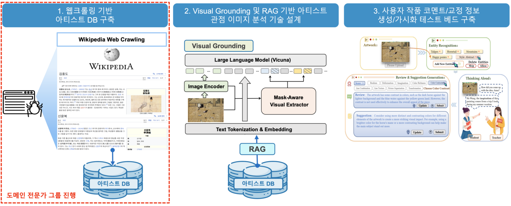
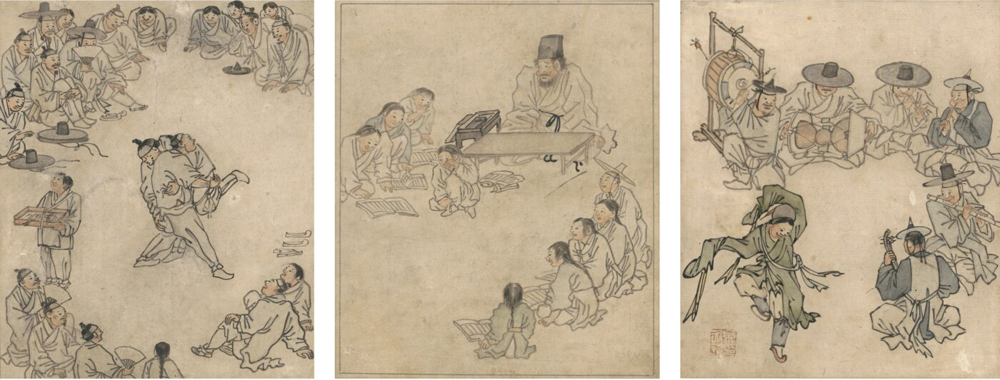
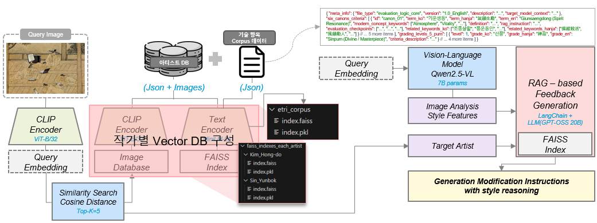
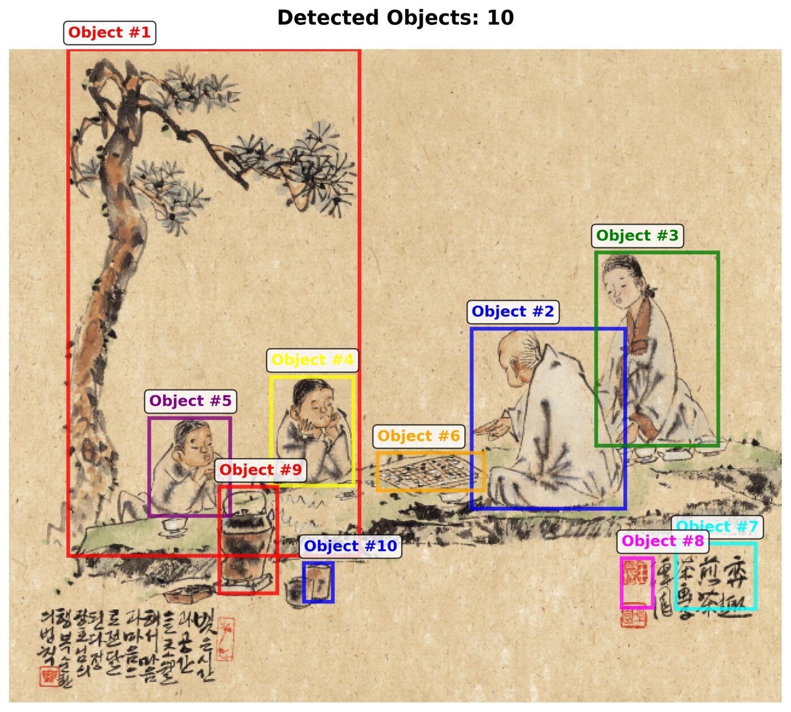
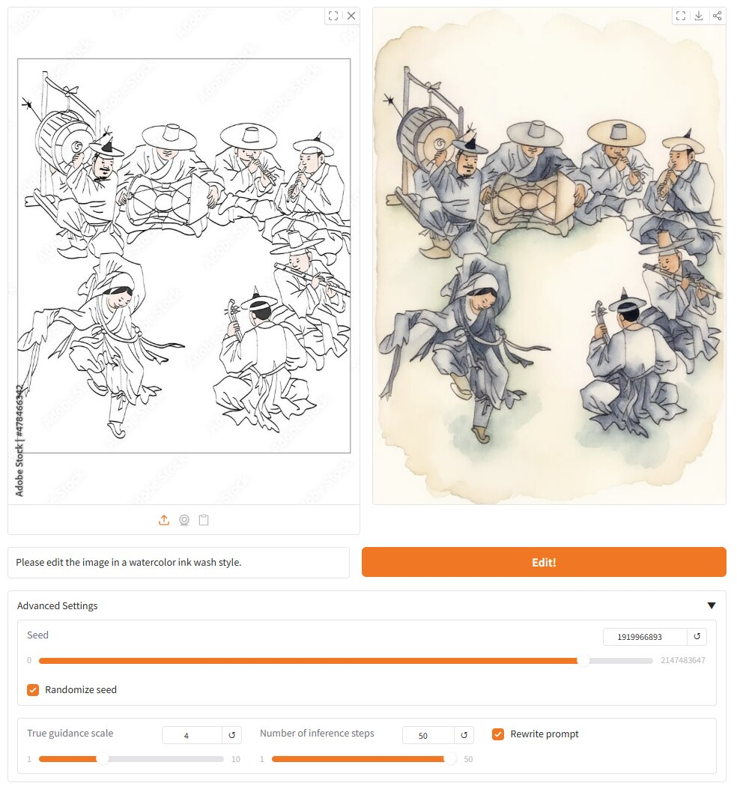

사용자 미술 창작 지원을 위한 아티스트 관점 창작 코멘트/교정 테스트베드 구축
사용자가 입력한 미술 작품을 김홍도·신윤복 등 아티스트의 관점에서 분석하고, RAG 기반 화풍 분석과 Visual Grounding 기반 교정 영역 가시화를 MCP 아키텍처로 통합한 창작 코멘트/교정 테스트베드.
Overview
본 과제는 사용자가 입력한 미술 작품 이미지를 조선 후기 대표 화가(김홍도, 신윤복 등)의 관점에서 심층 분석하고, 해당 아티스트의 화풍과 작법에 부합하도록 이미지 코멘트 및 교정 정보를 생성·가시화하여 맞춤형 창작 지도를 제공하는 지능형 테스트베드를 구축하는 것을 목표로 한다. 단순한 스타일 모방을 넘어 아티스트의 창작 의도와 기법적 원리를 사용자에게 전달함으로써 교육적 가치를 창출하는 데 초점을 둔다.
전통 회화 데이터는 화풍·기법·구도·시대적 맥락 등 복합적 의미가 얽힌 다층적 구조를 가지므로, 일반적인 이미지 분석 모델로는 예술적 뉘앙스를 깊이 있게 평가하기 어렵다. 이를 해결하기 위해 작가별 도메인 특화 데이터베이스를 구축하고, RAG(Retrieval-Augmented Generation)로 아티스트의 예술 철학에 근거한 심층 피드백을 생성하며, Visual Grounding으로 텍스트 피드백과 이미지 내 교정 영역을 정밀하게 연동한다. 전체 흐름은 이질적 AI 모듈을 중앙에서 제어하는 MCP(Multi-Modal Control Plane) 아키텍처로 통합되어, 사용자가 직관적으로 이해하고 수정할 수 있는 실질적 가이드를 제공한다. 본 과제는 ETRI 수요에 따라 한밭대학교 산학협력단이 수행하였다.

Approach
- 아티스트 도메인 데이터셋 구축 — 공신력 있는 디지털 아카이브에서 김홍도·신윤복 등의 작품과 화풍 텍스트를 수집하고, 이미지와 전문가 지식을 결합한 멀티모달 데이터셋으로 구조화.
- 풍속화 화풍 대비 전략 — 같은 풍속화 장르를 공유하면서도 필선·채색·소재 선택에서 뚜렷한 차이를 보이는 김홍도와 신윤복을 핵심 타깃으로 선정하여 전문가 수준의 미세 화풍 식별을 유도.
- 전통 비평 기준 기반 평가 체계 — 동양화 전통 비평 기준인 '6법'과 '품(品)' 등급 체계를 지식 베이스로 구축해 평가·등급 산정에 활용.
- RAG 기반 화풍 분석·피드백 — 작가별로 분리한 검색 데이터베이스(CLIP 임베딩·FAISS)에서 유사 레퍼런스를 검색하고, Vision-LLM(Qwen2.5-VL)이 추출한 시각적 특징과 결합해 6법별 피드백과 점수 기반 수정 우선순위를 생성.
- Visual Grounding 기반 교정 영역 가시화 — 자연어 수정 요청을 해석해 대상 객체를 탐지·분할하고, 우선순위별로 교정 영역을 원본 이미지 위에 오버레이로 표시.
- MCP 통합 — 이미지 입력부터 피드백 가시화까지 전 과정을 MCP 아키텍처로 오케스트레이션하고, 이미지 편집 모델을 활용한 피드백 반영 이미지 생성도 실험.
Methods & Tech
Results
김홍도·신윤복·정선 작품을 포함한 자체 구축 코퍼스와 ETRI 전달 데이터를 기반으로 통합 피드백 시스템을 구현하였다. 전년도 시스템의 문제점(하나의 피드백에 여러 평가 축 혼재, 자유 서술형 출력으로 인한 후속 처리 곤란, 객체-피드백 연결 정보 미반영)을 개선하여, 6법 각각을 독립 평가 항목으로 분리하고 점수 기반 우선순위를 부여하도록 출력 구조를 정형화하였다.
실제 스케치 입력에 대해 종합평·등급 산정(예: 능품)과 6법별 우선순위 피드백, 그리고 우선순위별 Visual Grounding 교정 영역 탐지가 동작함을 확인하였다. 피드백 반영 이미지 생성 실험에서는 전문가 피드백을 그대로 입력하기보다 편집 모델이 이해하기 쉬운 형태로 다듬어 전달할 때 교정 요소가 더 충실히 반영됨을 확인하였다.



